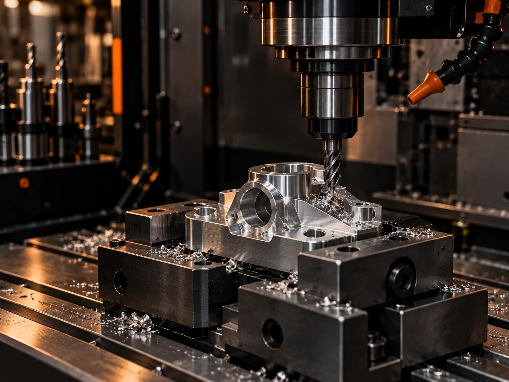
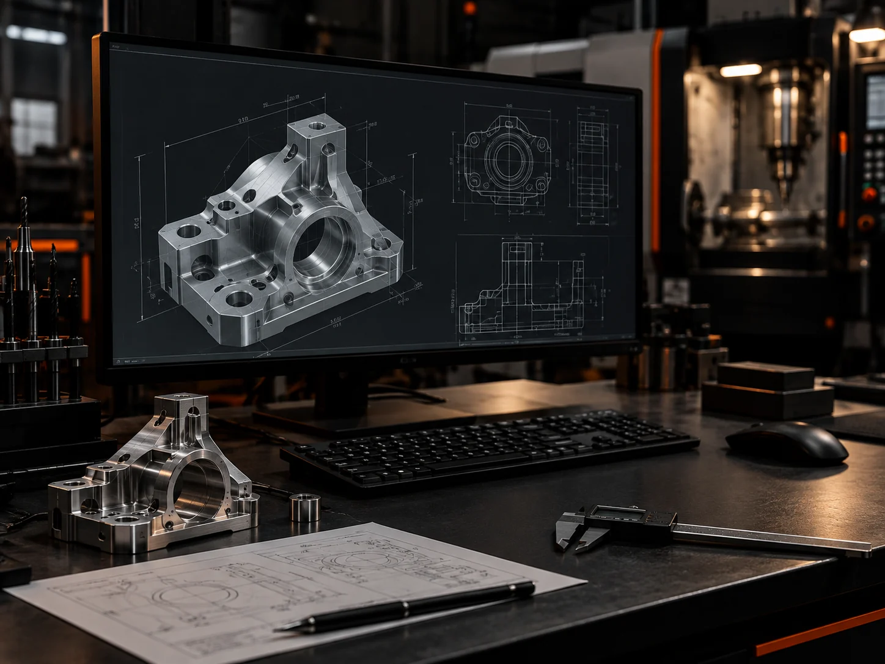
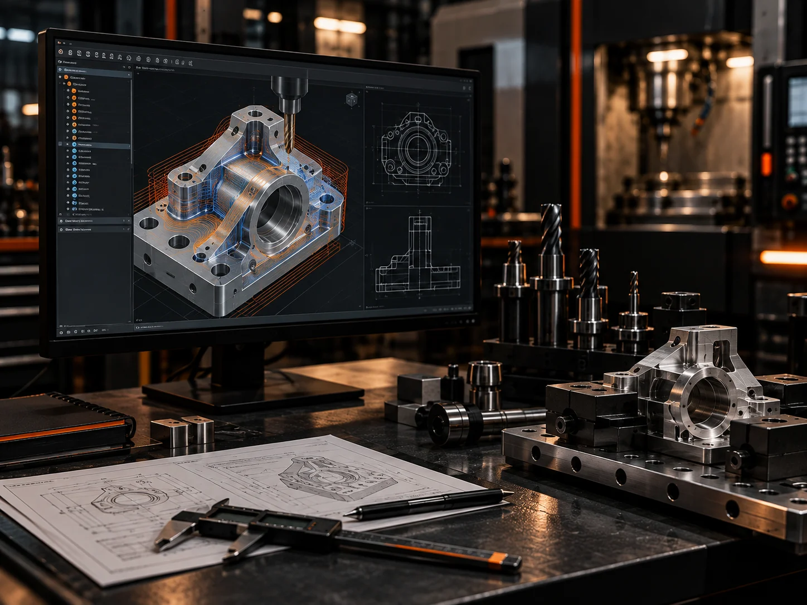
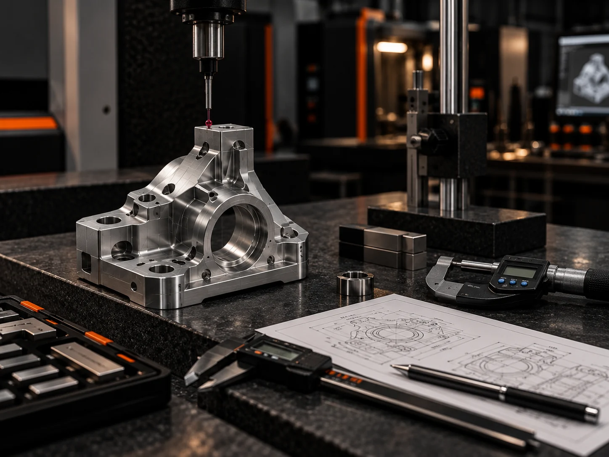
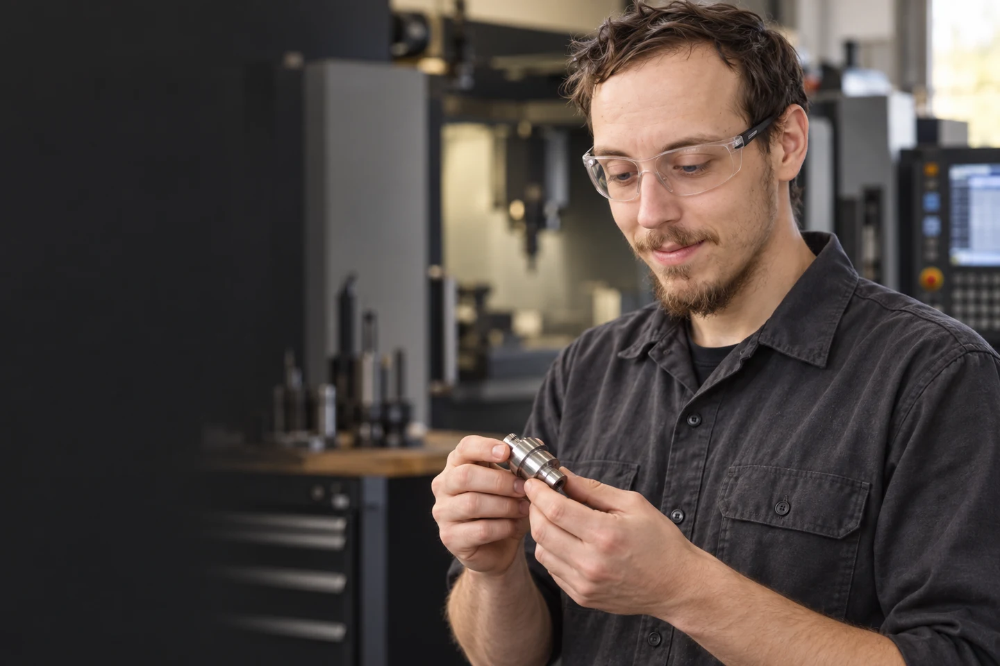

CAD / CAM
Modellering, opmåling, fremstillingsgrundlag og programmering i Fusion 360.
 START ET PROJEKT →
START ET PROJEKT →
PRECISION / PROTOTYPING / MACHINING
Fra idé, opmåling og CAD til bearbejdning, kontrol og færdig del. Datum Prototyping tager mindre prototype- og specialopgaver ind med fokus på funktion, kvalitet og en proces, der er til at følge.

Modellering, opmåling, fremstillingsgrundlag og programmering i Fusion 360.
Fræsning, drejning og kombinerede forløb valgt efter geometri og tolerancekrav.
Enkeltdele, specialværktøj, fixtures og mindre serier, når opgaven passer til rammerne.
Kritiske mål, pasninger og dokumentation håndteres som en del af fremstillingen.
UDVALGTE PROJEKTER
Projektcases viser ikke kun det færdige emne, men også ansvar, proces, kritiske punkter og hvad der faktisk kom ud af arbejdet.
Kontrolresultaterne er en del af projektet — ikke pynt bagefter.
HVORFOR DATUM
Datum Prototyping er bevidst lille. Det betyder direkte dialog og ansvar gennem hele opgaven — fra den første afklaring til den færdige del.
Du taler med den samme person, der afklarer, modellerer, fremstiller og kontrollerer opgaven.
CAD og design vurderes med blik for, hvordan delen faktisk skal spændes op, bearbejdes og måles.
Revisioner, kritiske mål og kontrol bliver dokumenteret, når opgaven har brug for det.
Arbejdsmetoderne etableres nu, så de kan følge med fra mindre opgaver til fremtidig egen produktion.
ARBEJDSGANG
Maskinen er ikke første trin. Funktionen, kravene og fremstillingsgrundlaget skal være forstået, før der bliver lavet spåner.
Funktion, anvendelse, kritiske mål, pasninger, materiale og hvad kunden allerede har af grundlag.
CAD/CAM, opspænding, værktøj, rækkefølge og kontrolpunkter tænkes sammen før fremstilling.
CNC, manuel bearbejdning eller en kombination vælges efter geometri, tolerancer og behov.
Kritiske mål kontrolleres undervejs. Resultatet afsluttes med relevant dokumentation og funktionstest.



KVALITET I PRAKSIS
Et godt resultat skal også kunne forklares. Hvad var kritisk? Hvordan blev delen fremstillet? Hvad blev kontrolleret? Derfor bliver kontrol og dokumentation skaleret efter opgaven i stedet for at blive et administrativt lag for sin egen skyld.
OM DATUM
Datum Prototyping er et one-man setup i opbygning. Jeg er finmekaniker under uddannelse på TEC Frederiksberg og forventer svendebrev i april 2027. Frem til da er hovedfokus uddannelsen og mindre opgaver, der passer til de rammer og maskiner, jeg har adgang til.
Målet er at fortsætte med at bygge erfaring, tage relevante opgaver ind og gradvist udvikle Datum Prototyping frem mod egen produktion og den første maskine.

Finmekaniker under uddannelse · svendebrev forventet april 2027.
CAD/CAM, CNC, manuel bearbejdning, kontrol og dokumentation.
Opbygning gennem erfaring, mindre opgaver og senere første egen maskine.
CURRENT CAPABILITY
Jeg vil hellere sige nej til en opgave, der ikke passer til rammerne, end love mere end jeg kan stå inde for.
Enkeltdele og mindre opgaver, hvor funktion og fremstilling skal afklares sammen.
Modellering fra skitse, mål, eksisterende del eller teknisk idé.
Simple hjælpeværktøjer, kæber, holdere og fixtures med konkret anvendelse.
Gentagne dele efter aftale, når maskintid, materiale og krav passer til de nuværende muligheder.
Arbejdet udføres i dag gennem de uddannelses- og værkstedsrammer, jeg har adgang til på TEC Frederiksberg. Derfor vurderes hver opgave ud fra kompleksitet, maskinadgang, tid og ansvar, før jeg siger ja.
START ET PROJEKT
Du behøver ikke komme med en færdig løsning. Beskriv funktionen, det vigtigste krav og det grundlag du allerede har. Så kan resten afklares teknisk derfra.
Hvad skal delen gøre — og hvad må ikke gå galt?
Skitse, mål, CAD, tegning eller eksisterende del. “Ved ikke” er også et gyldigt svar.
Jeg vurderer metode, muligheder, dokumentation og om opgaven passer til de nuværende rammer.
Formularen er et kort teknisk brief — ikke en bestilling. Den hjælper bare med at få de rigtige spørgsmål på bordet tidligt.
Du har ændret dine valg. Byg beskedudkastet igen for at opdatere teksten.